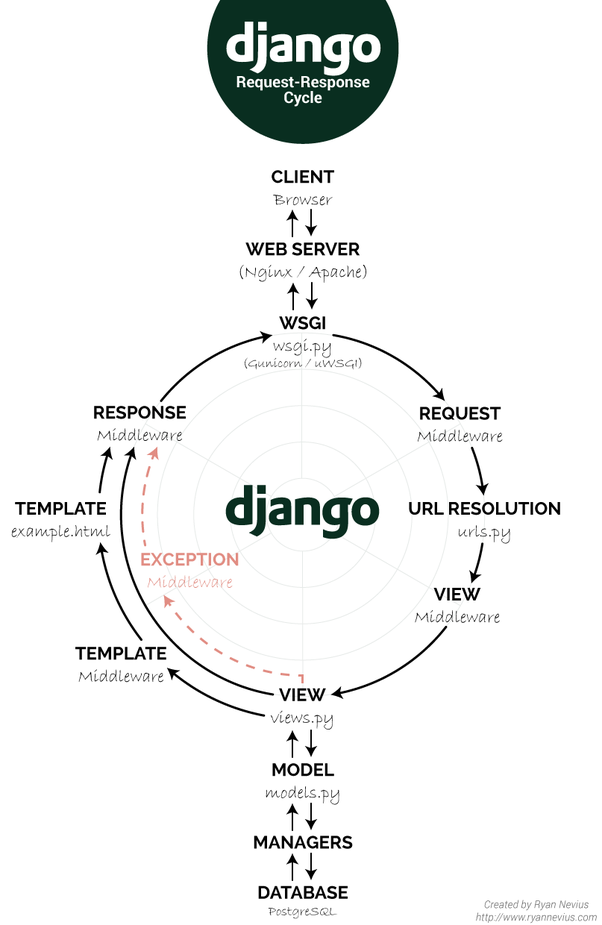

3. Views
Request-Response Cycle¶
The request-response cycle is probably the most important part needed to understand in a Django project.

WSGI : Python Web Server Gateway Interface https://www.python.org/dev/peps/pep-0333/
Middleware Order¶
Middleware is a framework of hooks into Django’s request/response processing. It’s a light, low-level “plugin” system for globally altering Django’s input or output.
https://docs.djangoproject.com/en/2.1/topics/http/middleware/

Exercise:
Create a middleware that logs/prints all requests durations.
Creating a basic API¶
We'll create some endpoints to expose data with
It's not mandatory to use DRF, we could use it plain old Django.
DRF, with a cost of abstractions, some verbosity (and some performance) gives us:
- Concern separation, more plugable than function based views
(Validation, Pagination, Renderers, Parsers, Permissions, Rate-Limit, Auth plugins..)
Main concepts:
Serializers:¶
1 2 3 4 5 6 7 8 9 | # serializers.py from rest_framework.serializers import ModelSerializer from nodes import models class NodeSerializer(ModelSerializer): class Meta: model = models.Node fields = '__all__' |
Viewsets¶
Quite abstract class to handle various actions (list, retrieve, update, delete..)
1 2 3 4 5 6 7 8 | # views.py from rest_framework import viewsets from nodes import models class NodeView(viewsets.ModelViewSet): queryset = models.Node.objects.all() serializer_class = NodeSerializer |
1 2 3 4 5 6 7 8 9 10 11 12 | # urls.py from rest_framework import routers router = routers.SimpleRouter() router.register(r'data', views.NodeView) urlpatterns = [ # Not default admin because of possible attacks to known urls # The admin can be removed if it's not gonna be used path('config_admin/', admin.site.urls), ] + router.urls |
Exercise:
Given the above examples, create endpoints for stream and data.
No need for nested them → Flat is better than nested
Django and OpenAPI¶
Swagger 2.0
OpenAPI 3.0
When working with code and a API spec there are three options.
1. Create an API spec and Code it separately Pros: - Simpler, there is no directly relation between API spec and code. - Easier to integrate in current projects, as it doesnt make any assumption about how is coded.
Cons: - It's easier to make mistakes by the developer due to not having fully syncronized Spec and Code.
2. API First way This is probably the most elegant solution, and other tools in the python ecosystem use this like Connexion. In this way we would write first the 4th platform spec, and we would have the incoming request validated thought that spec.
Unfortunately, I haven't found a way to integrate something like the above tool in a Django project.
The bravado-core library seems promising, but I haven't tested deeply.
3. Code first way
In this way, we code the API, for example with DRF and its serializers and the tooling will create and OpenAPI spec for us based on the code. This is the approach we have used in SS-API and we are quite happy with it, but note there is no 4th integration there, so there is not any custom values as scope in the spec.
We serve a /schema.json file in our service in order to integrate it with luca apidocs
DRF-YASG¶
drf-yasg Automatic generation of Swagger 2.0 spec based on DRF serializers and views (introspection) and some annotations.
Business Logic on Django¶
- Never make business logic in VIEWS. Views are for validating input and returning responses. (Difficult with DRF)
- Django advice for FAT models → It's ok on little to medium projects.
- Prefer using managers and querysets to chain filters, models for simple properties
- Create another layer called Service to reuse business logic.
References: